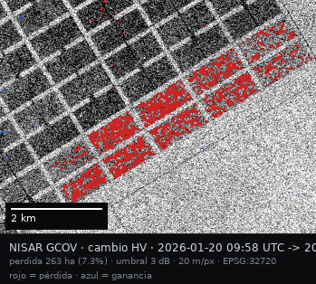
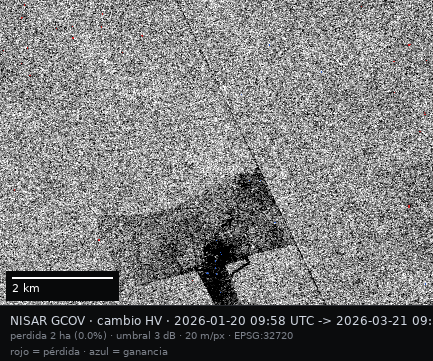
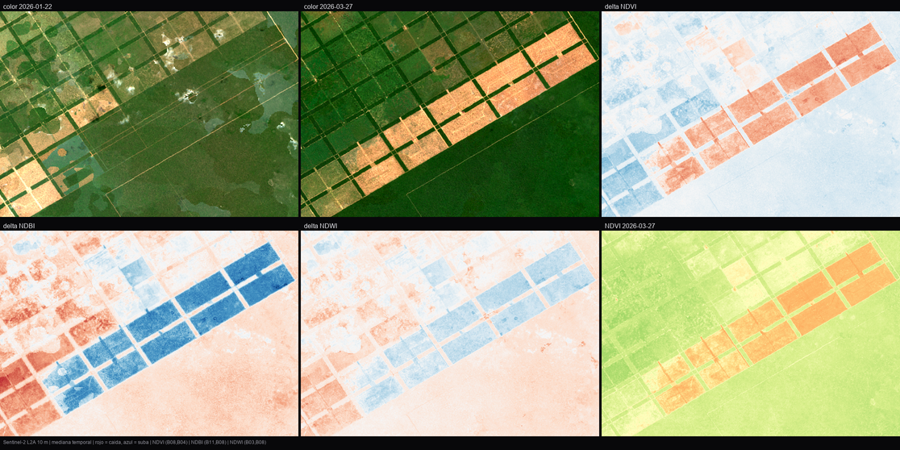
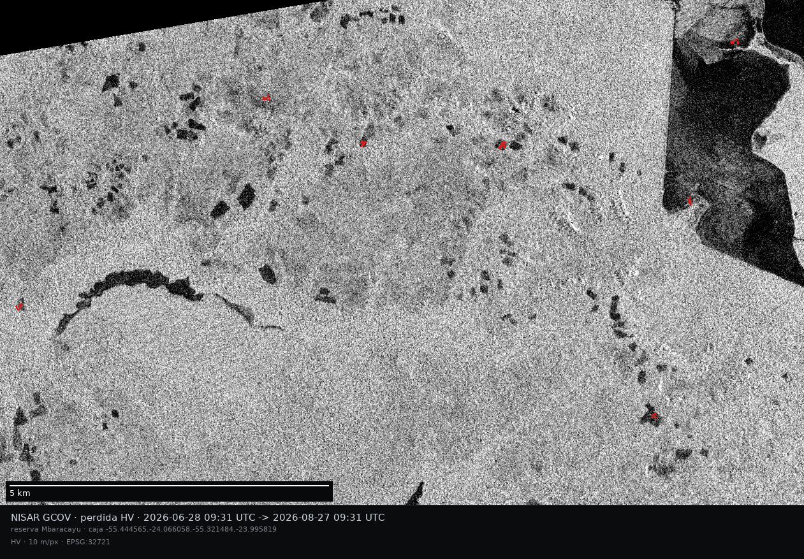

Barrido de umbral
La misma escena y el mismo par de fechas, variando solo el umbral de caída de HV. El punto negro marca el valor utilizado en el resto del análisis.
NASA Space Apps 2026 · Dancing with the SARs
NISAR, banda L, polarizaciones HH y HV. Dos escenas de Paraguay a resoluciones distintas. Se midió la caída de retrodispersión HV, se filtró por coherencia espacial y se contrastó contra un polígono de bosque sin intervención. La superficie depende de la escala y se informa como rango; la existencia del cambio no depende de ella.
01
La primera escena está en el Chaco paraguayo. La caja de trabajo cubre 3.602 ha, con un 75 % de cobertura forestal. Al suroeste, a 9,8 km, se delimitó una caja de control de 5.283 ha con 94 % de bosque y sin intervención conocida en el período.

02
No hay un clasificador entrenado. El resultado sale de una cadena de umbrales explícitos, todos reproducibles con los comandos del repositorio.
03
NISAR repite la misma geometría cada 12 días. Al dividir la ventana en pares consecutivos, el total acumulado se convierte en una secuencia y el cambio queda acotado entre dos fechas. La pérdida empieza entre el 20 de enero y el 1 de febrero de 2026, y termina antes del 9 de marzo.
El par del 13 al 25 de febrero registra 102 ha de ganancia en el desmonte. El control registra 26,6 ha en la misma ventana: el aumento es de la escena completa y no del área desmontada.
04
El mismo par de imágenes, el mismo umbral y un tamaño de caja comparable, aplicados a bosque sin intervención. Si el detector midiera un sesgo del sensor o de la atmósfera, el control también lo mostraría.

05
El par de radar se contrasta con Sentinel-2 L2A a 10 m: doce escenas por fecha en un cubo alineado, mediana temporal para eliminar nubes y tres índices espectrales. La banda que cambia es bosque seco chaqueño raleado que pasa a suelo desnudo con bordes rectos, el patrón de desmonte con topadora para ganadería.

Dentro de la banda el NDVI cae y el NDBI sube: menos infrarrojo cercano y más SWIR, la firma de suelo descubierto. El promedio de la caja casi no se mueve (NDVI 0,393 a 0,411) porque enero cae en plena temporada de lluvias y las parcelas bajas aparecen anegadas en celeste, lo que hunde el NDVI de partida. Por eso la evidencia es el mapa de cambio dentro de la banda, no el promedio de la escena.
06
El umbral de 3 dB es una elección. Para medir cuánto influye, el cálculo se repitió con seis valores. El desmonte decrece de forma continua; el control se derrumba. La relación entre ambos es lo que sostiene la conclusión.
La misma escena y el mismo par de fechas, variando solo el umbral de caída de HV. El punto negro marca el valor utilizado en el resto del análisis.
Componentes conexas de 8 vecinos. Se descarta toda mancha menor a 0,5 ha, que a 20 m equivale a 12,5 píxeles.
La tasa de pérdida del bosque intacto estima cuántos falsos positivos cabría esperar en la caja del desmonte.
07
El desafío pregunta qué polarizaciones muestran el cambio. La diferencia entre HV y HH permite separar estructura de humedad: un aumento de humedad afecta a las dos polarizaciones de forma parecida, mientras que la pérdida de dosel afecta sobre todo a HV, que es la banda de dispersión de volumen.
08
Cada píxel de bosque aporta un valor de ΔHV. Si el cambio detectado fuera ruido, la distribución del desmonte sería igual a la del control. No lo es: el desmonte tiene una cola hacia valores negativos que el control no presenta.
09
La misma caja grande de 156.512 ha, el mismo detector y tres ventanas distintas. A 12 días el resultado es pequeño y simétrico. A 276 días lo domina la diferencia de humedad entre estaciones, y la cifra deja de describir un cambio en el terreno.
La consecuencia práctica es que el detector de cambio de NISAR es utilizable en pares adyacentes y no en comparaciones de varios meses. Sin declarar esa condición, cualquier cifra de deforestación tomada de un par lejano es indefendible.
10
El mismo procedimiento se aplicó sin cambios a otra escena, a 10 m de resolución y con 48 días entre fechas. La caja cubre 76.668 ha, con un 82 % de bosque. El objetivo era comprobar si el método dependía del lugar o de la resolución.
La relación entre desmonte y control se mantiene en todos los umbrales, y crece a medida que el umbral sube: los bloques con pérdida intensa son los que persisten.
11
Si el detector marca desmonte en la región, dentro de un área protegida debería marcar poco. Se repiten las dos escenas de la sección anterior —28 de junio y 27 de agosto de 2026, mismo track, mismo procesamiento— y se achica la caja a la Reserva Mbaracayú: 9.762 ha con un 89 % de bosque. No hay descarga nueva, sólo otro recorte.
| Reserva | Región | |
|---|---|---|
| Área de la caja | 9.762 ha | 76.668 ha |
| Bosque | 8.646 ha (89 %) | 62.752 ha (82 %) |
| Pérdida a 3 dB | 218,9 ha | 1.069,8 ha |
| Componentes conexas | 6.573 | 28.461 |
| Superan 0,5 ha | 4,4 ha en 7 bloques | 291,5 ha en 89 bloques |
| Bloque mayor | 0,9 ha | 34,3 ha |
Misma escena, misma ventana de 60 días. La diferencia no es el método: es el terreno.

El detector crudo marca 218,9 ha, pero son píxeles sueltos: el fragmento mediano mide 0,02 ha, ruido de la imagen de radar. Al exigir bloques de media hectárea quedan 4,4 ha en siete manchas, la mayor de 0,9 ha. El control —459 ha dentro de la misma caja— produce cero bloques. En esta ventana la reserva no muestra desmonte a escala de parcela, mientras la región que la rodea sí.
12
A 10 m hay cuatro veces más píxeles por hectárea que a 20 m. El mismo cambio se reparte en más unidades, y el conteo directo de píxeles sobre el umbral crece con la resolución. Ese conteo no es una propiedad del terreno: es una consecuencia del muestreo. Por eso el área que se informa es la de componentes coherentes.
13
NISAR no tiene imágenes de la reserva antes del 19 de junio de 2026. Ese período se cubrió con Sentinel-2, restringido al polígono del área protegida: 8.840 ha de bosque dentro de una caja de 9.719 ha. La pérdida entre julio y octubre de 2025 son 14 parcelas pequeñas.
El detalle completo, con el panel de pérdida y el barrido de umbral, está en la página de la reserva.
14
El desafío pide explicar también lo que el radar no muestra. Estas son las limitaciones del resultado, incluidas las que reducen su alcance.